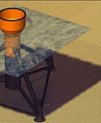
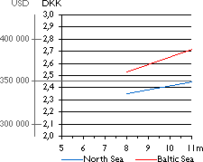

Offshore
Foundations: Tripod
Ramboll
 The tripod foundation draws
on the experiences with light weight and cost efficient three-legged
steel jackets for marginal offshore fields in the oil industry.
The tripod foundation draws
on the experiences with light weight and cost efficient three-legged
steel jackets for marginal offshore fields in the oil industry.
 From a steel pile below the turbine tower
emanates a steel frame which transfers the forces from the tower
into three steel piles. The three piles are driven 10 to 20 metres
into the seabed depending on soil conditions and ice loads.
From a steel pile below the turbine tower
emanates a steel frame which transfers the forces from the tower
into three steel piles. The three piles are driven 10 to 20 metres
into the seabed depending on soil conditions and ice loads.
Advantages
of the Tripod
The advantage of the three-legged model is that it is suitable
for larger water depths. At the same time only a minimum of preparations
are required at the site before installation.
Multi-pile
technology
The foundation is anchored into the seabed using a relatively
small steel pile (0.9 m diameter) in each corner. Because of
the piling requirement, the tripod foundation is not suited for
locations with many large boulders.
Erosion
Considerations
Erosion will normally not be a problem with this type of foundation.
Suitable
for Larger Water Depths
This type of foundation is not suitable at water depths lower
than 6-7 metres. The main reason for this is that service vessels
at low water depths will face problems approaching the foundation
due to the steel frame.
Cost by Water Depth for Tripod Foundations
 As
in previous page, the basic difference between costs in the North
Sea and the Baltic Sea is that waves determine dimensioning in
the North Sea, whereas ice is decisive in the Baltic Sea. The
costs include installation (1997 prices).
As
in previous page, the basic difference between costs in the North
Sea and the Baltic Sea is that waves determine dimensioning in
the North Sea, whereas ice is decisive in the Baltic Sea. The
costs include installation (1997 prices).

|
Back | Home
| Forward |
© Copyright 2000 Soren Krohn.
All rights reserved.
Updated 9 September 2000
http://www.wind power.dk/tour/rd/tripod.htm